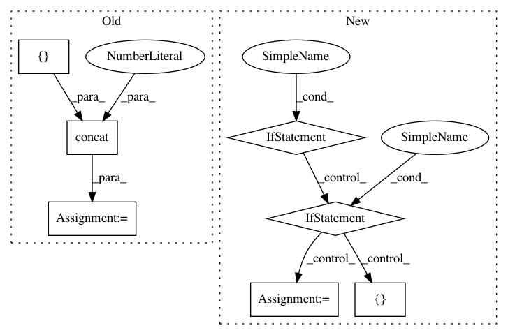

77796d63a9a04a5c7639e999f4fa78af62bac405,recordlinkage/comparing.py,,_compare_fuzzy,#Any#Any#Any#Any#Any#,331
Before Change
// Check jellyfish
_check_jellyfish()
series = pandas.concat([s1, s2], axis=1)
if method == "jaro":
approx = series.apply(lambda x: jellyfish.jaro_distance(x[0], x[1]) if pandas.notnull(x[0]) and pandas.notnull(x[1]) else np.nan, axis=1)
elif method == "jarowinkler":
approx = series.apply(lambda x: jellyfish.jaro_winkler(x[0], x[1]) if pandas.notnull(x[0]) and pandas.notnull(x[1]) else np.nan, axis=1)
elif method == "levenshtein":
approx = series.apply(lambda x: jellyfish.levenshtein_distance(x[0], x[1])/np.max([len(x[0]),len(x[1])]) if pandas.notnull(x[0]) and pandas.notnull(x[1]) else np.nan, axis=1)
approx = 1 - approx
elif method == "damerau_levenshtein":
approx = series.apply(lambda x: jellyfish.damerau_levenshtein_distance(x[0], x[1])/np.max([len(x[0]),len(x[1])]) if pandas.notnull(x[0]) and pandas.notnull(x[1]) else np.nan, axis=1)
approx = 1 - approx
After Change
if method == "jaro":
approx = jaro_similarity(s1, s2)
elif method in ["jarowinkler", "jaro_winkler"]:
approx = jarowinkler_similarity(s1, s2)
elif method == "levenshtein":
approx = levenshtein_similarity(s1, s2)
elif method in ["dameraulevenshtein", "damerau_levenshtein"]:
approx = damerau_levenshtein_similarity(s1, s2)
elif method in ["qgram", "q_gram"]:
approx = qgram_similarity(s1, s2)
elif method == "cosine":
In pattern: SUPERPATTERN
Frequency: 3
Non-data size: 7
Instances
Project Name: J535D165/recordlinkage
Commit Name: 77796d63a9a04a5c7639e999f4fa78af62bac405
Time: 2016-05-06
Author: jonathandebruinhome@gmail.com
File Name: recordlinkage/comparing.py
Class Name:
Method Name: _compare_fuzzy
Project Name: kwgoodman/numerox
Commit Name: 35888e106789800f5dad17a1332fd3888b0b575f
Time: 2018-01-01
Author: kwgoodman@gmail.com
File Name: numerox/report.py
Class Name: Report
Method Name: append_prediction
Project Name: RasaHQ/rasa
Commit Name: d4a2f656470e3190f8e877139455abcff1ad7cdb
Time: 2018-09-28
Author: mr.voov@gmail.com
File Name: rasa_core/policies/tf_utils.py
Class Name: TimedNTM
Method Name: __call__